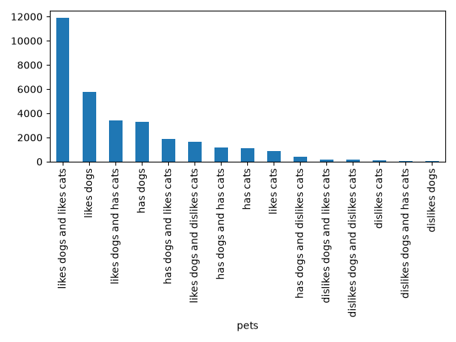

8. Fancy feature transformations
Code
Slides
DATA 3464: Fundamentals of Data Processing
Fancy feature transformations
Charlotte Curtis October 22, 2026
Topic overview
- More complex categorical encoding
- High cardinality
- Infrequent categories
- More complex numerical transformations
- 1:many
- many:many
The data process to date

- We’ve covered one-hot and ordinal encoding
- We’ve covered 1:1 numerical transformations
Sometimes getting fancy is the answer
Potential problems with one-hot encoding
- One-hot encoding creates one column per category
- High cardinality implies some categories are infrequent
- Extreme case: \(N\) samples have \(N\) unique categories
- Very sparse matrix can cause numerical stability, high computation
Either we make it ordinal somehow, or we need to combine categories
Combining categories

- Even without high cardinality, might want to merge low frequency categories
- Pass
max_categoriesas a constraint toOneHotEncoder
Another approach: target encoding
- Basic concept: replace the category with the mean of the target
- Must be very careful during training to avoid data leakage!
- Example: predicting weight of animal
| Animal | mean_kg | |
|---|---|---|
| cat | → | 4.1 |
| dog | → | 15.4 |
| rabbit | → | 2.2 |
Getting fancy with feature hashing
- Good if you have too many categories, or combinations of categories
- Converts each category into a fixed-length feature vector
| Animal | A_0 | A_1 | A_2 | … | A_16 | |
|---|---|---|---|---|---|---|
| cat | → | 1 | 0 | 0 | … | 1 |
| dog | → | 0 | 1 | 0 | … | 1 |
| rabbit | → | 1 | 0 | 1 | … | 0 |
Even fancier methods exist, like supervised encoding methods which basically train a model-within-a-model
Advantages/disadvantages
Target encoding
- Powerful if strong predictor
- Compact
- Doesn’t work for unsupervised
- Central tendency poor measure for categories with few samples
- Difficult to deal with novel categories
Feature hashing
- Natively handles novel categories
- Compact (fixed columns/features)
- Good for high cardinality
- Risk of hash collision
- Loss of interpretability/meaning
Fancy numeric transformations
1:many transformations
- So far our numeric transformations have been 1:1
- 1:many creates multiple features from 1, like binning
- Basis expansion introduces nonlinearity to a continuous feature, e.g.: \[x \rightarrow [\beta_1x, \beta_2x^2, \beta_3x^3]\]
- More exciting is the spline version where you can define different polynomials for different ranges of \(x\)
many:many transformations

- Linear projection methods create new features: \[X^* = XA\] where \(A\) is the projection matrix and \(X^*\) is the transformed data
- We can use this for dimensionality reduction by only keeping some of \(X^*\)
- Example: Principle component analysis (PCA) finds the set of orthogonal vectors that explain the most variance
Variance and covariance - Review (?)
The variance of a single feature \(\mathbf{x}\) is: \[\mathrm{var}(\mathbf{x}) = \frac{\sum_1^n (x_i - \mu_x)^2}{n}\]
The covariance between two features \(\mathbf{x_1}\) and \(\mathbf{x_2}\) is: \[\mathrm{cov}(\mathbf{x_1}, \mathbf{x_2}) = \frac{\sum_1^n (x_{1i} - \mu_{x_1})(x_{2i} - \mu_{x_2})}{n}\]
Independent variables will have low covariance, but low covariance does not necessarily mean independence!
Covariance matrix
The covariance matrix between all features in a matrix \(X\) is: \[\mathrm{cov}(X) = \begin{bmatrix} \mathrm{var}(\mathbf{x_1}) & \mathrm{cov}(\mathbf{x_1}, \mathbf{x_2}) & \cdots & \mathrm{cov}(\mathbf{x_1}, \mathbf{x_m}) \\ \mathrm{cov}(\mathbf{x_2}, \mathbf{x_1}) & \mathrm{var}(\mathbf{x_2}) & \cdots & \mathrm{cov}(\mathbf{x_2}, \mathbf{x_m}) \\ \vdots & \vdots & \ddots & \vdots \\ \mathrm{cov}(\mathbf{x_m}, \mathbf{x_1}) & \mathrm{cov}(\mathbf{x_m}, \mathbf{x_2}) & \cdots & \mathrm{var}(\mathbf{x_m}) \end{bmatrix}\]
Just like regular variance, covariance scales with the data
If you normalize this, you get the correlation matrix
Back to PCA
- Principle component analysis, proposed in 1901 by Karl Pearson, is a linear projection of multidimensional data onto the axes of maximum variance
- The axes are found by eigendecomposition of the covariance matrix: \[C = Q\Lambda Q^{-1}\]
- The eigenvectors \(Q\) form the new orthogonal basis for the covariance matrix \(C\), while the eigenvalues \(\Lambda\) represent the amount of variance “explained”
- \(X^*\) can be calculated as: \[X^* = XQ\]
Dimensionality reduction with PCA
Sort in order of decreasing eigenvalue (“amount of variance explained”)
Keep only the first \(k\) eigenvectors to form \(Q_k\)
Project data onto this smaller basis: \[X^* = XQ_k\]
Implemented in Scikit-learn by passing
n_componentstoPCA(), e.g.pca = PCA(n_components=2) # just two axes X_reduced = pca.fit_transform(X)
Linear discriminant analysis (LDA)
- Similar to PCA, but supervised
- Finds basis that maximize class separability
- Number of projection vectors must be
<= min(n_classes - 1, n_features) - Still uses projections and eigenvalues, but adds some statistical magic
- Key assumptions:
- Features are normally distributed within a class
- Classes have identical covariance matrices
- Implemented in Scikit-learn as LinearDiscriminantAnalysis
Other methods
- It seems crazy, but random projections can work to reduce dimensionality
- Another many:many transformation that has gained popularity in the “Deep Learning era” is the autoencoder
- These are (typically) neural networks that learn a lower-dimensional representation by training the output to match the input
- The “bottleneck” layer in the middle is the reduced representation
- During inference, the model is chopped in half
Pros and cons of dimensionality reduction
Pros
- Can improve model by:
- removing noise
- reducing collinearity
- Lower complexity/compute cost
- Can help with visualization
- Can be informative about features
Cons
- Throwing out information
- Harder to interpret results
- May not actually improve anything
Higher list of pros, but still… don’t do it unless it’s demonstrably beneficial
Coming up next
- Lab: build a model with the housing data
- Assignment 2: EDA, I look forward to seeing what you discover
- Lecture: Feature interactions